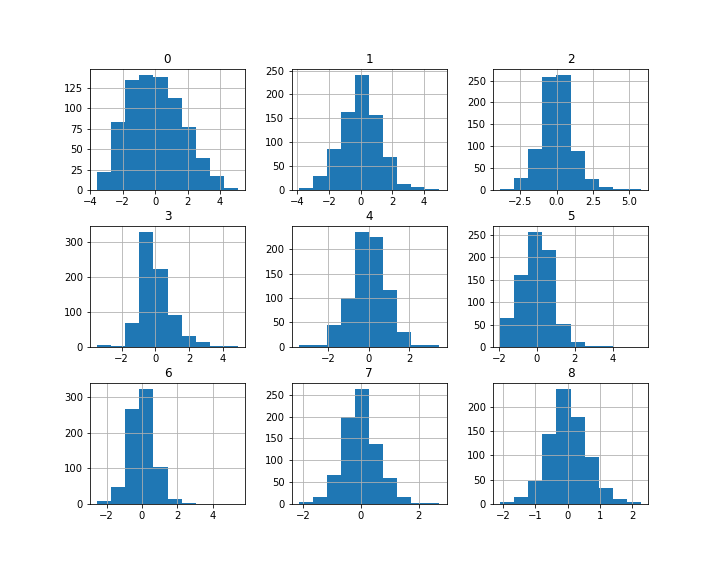

This is a look at the unscaled feature data. You can see some of the features have even distribution while some have some skewed data due to the sample size having some increased numbers of represesntation.
Distribution of Factor Unscaled

After we scaled the data we can now see how the data is properly distributed